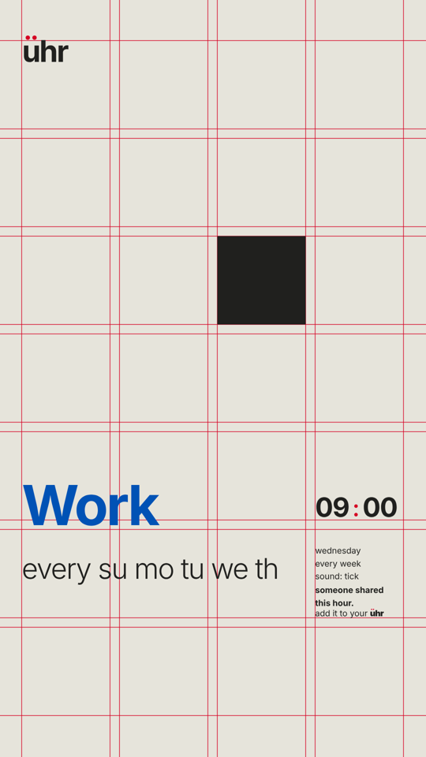
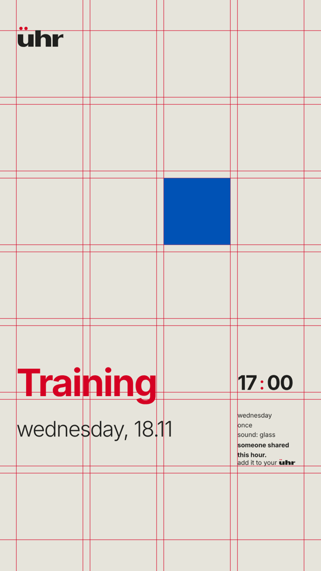
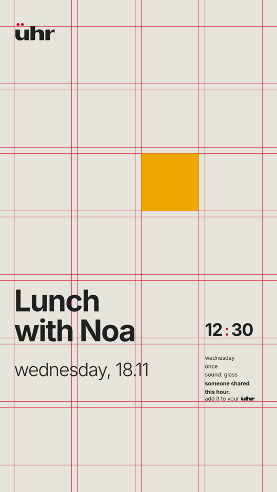

כל מה שצריך כדי להמשיך את uhr: הטוקנים, האטומים, המולקולות, המצבים והחוקים של השפה. כל ערך כאן נקרא מהקובץ tokens.css — האפליקציה והספר קוראים מאותו מקום.
ההחלטות הקטנות ביותר, כל אחת פעם אחת ובשם.
--type--fontארבע עמודות. כל ריבוע הוא שעה. השוליים, הריבוע והרווח מחזירים את הרוחב של המסך בדיוק.
החלקים שאין להם חלקים.
אטומים שעובדים יחד.



אותו גריד של מסך הבית. הריבוע בצבע הסוג. השם מתחלף בין אדום, כחול ושחור — לעולם לא בצבע של הריבוע. שם ארוך נשבר לשתי שורות.
אותו אלמנט, ברגעים שונים.
השפה, במשפטים. מה שלא כתוב כאן — שואלים.
cubic-bezier(.7,0,.2,1). בלי עמעומים, בלי טשטוש, בלי צל, בלי גרדיאנט — חיתוך או מתיחה.המערכת, עובדת. שבוע לדוגמה — שום דבר לא נשמר אצלך.